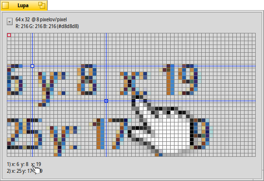

Slovenčina
Slovenčina Français
Français Deutsch
Deutsch Italiano
Italiano Русский
Русский Español
Español Svenska
Svenska 日本語
日本語 Українська
Українська 中文 ［中文］
中文 ［中文］ Português
Português Suomi
Suomi English
English Lupa
Lupa
| Panel: | ||
| Umiestnenie: | /boot/system/apps/Magnify | |
| Nastavenia: | ~/config/settings/Magnify_prefs |
Lupa zobrazuje zväčšenú verziu oblasti pod kurzorom myši.
Navrchu nájdete veľkosť a úroveň priblíženia oblasti. "32 x 32 @ 8 pixlov/pixel" znamená, že sa pozeráte na štvorec 32x32 pixlov okolo vášho kurzora a že každý pixel je zväčšený 8-krát.
Podtým je farba pixelu, ktorý je označený červeným orámovaním. Jeho farba je uvedená v RGB a šestnástkovej hodnote.
Môžete použiť ← / → / ↑ / ↓ na posunutie orámovania na iný pixel.
Na meranie vzdialenosti a zarovnávanie objektov môžete pridať maximálne 2 modré krížiky mušky pomocou ALT H. Ich X/Y súradnice vzhľadom k hornému ľavému rohu a, ak sú obe pridané, vzájomné X/Y vzdialenosti, sú zobrazené dolu.
Môžu byť presúvané pomocou ← / → / ↑ / ↓. Aktívna muška je označená písmenom "x".
Môžete presúvať kurzor myši po pixloch pomocou OPT ← / → / ↑ / ↓.
Kliknutie na vysúvacie menu vám dáva viacero možností:
| ALT S | Uloží súčasné zobrazenie ako súbor zdrojov. | ||
| ALT C | Kopríruje súčasné zobrazenie do schránky. | ||
| ALT T | Prepne zobrazenie všetkých dodatočných informácií. | ||
| ALT H | Pridá mušku, ktorú môžete presúvať | ||
| ALT SHIFT H | Odstráni naposledy pridanú mušku | ||
| ALT G | Prepne zobrazenie mriežky | ||
| ALT F | Zastaví/pokračuje v obnovovaní priblíženej oblasti. | ||
| ALT I | Pokračuje v obnovovaní priblíženej oblasti, ale nesleduje viac kurzor myši. | ||
| ALT / | Vráti späť štvorcovité zobrazenie po zmene veľkosti okna. | ||
| ALT - | Zmenší priblíženú oblasť okolo kurzora. | ||
| ALT + | Zväčší priblíženú oblasť okolo kurzora. | ||
| ALT , | Zmenší priblíženie. | ||
| ALT . | Zväčší priblíženie. |